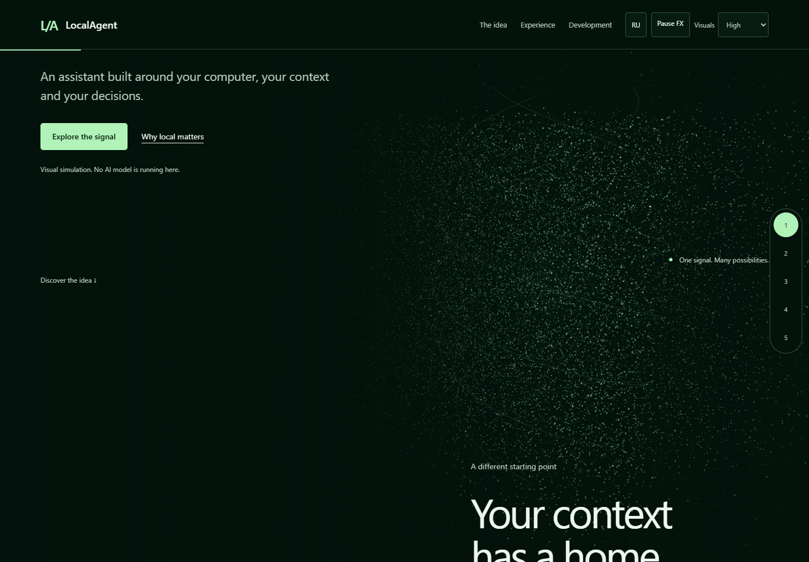
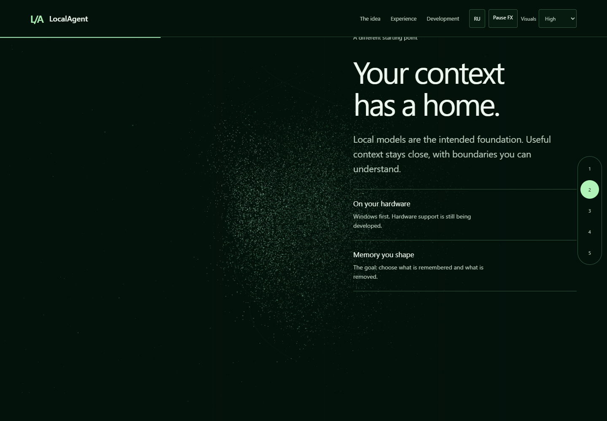
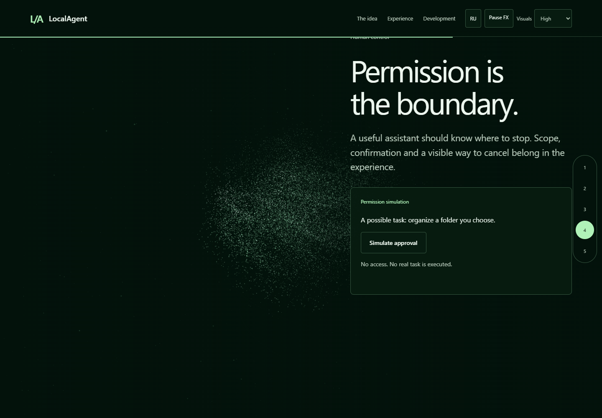

Открыть прототип · Baseline PR22
Геометрия удерживает позу для чтения, затем переходит к следующей главе. Три native CSS момента: уход Hero, сборка локальных принципов, появление границы контроля. Native anchors, Back и единый renderer сохранены.
Это локальная подготовка #15. Production integration gated on owner visual acceptance PR22. Никакие production-файлы или build allow-list в этой ветке не изменены.



Local QA · Computed native animations · Single-navigation lab comparison. Cache/driver warmup uncontrolled; LCP values are not a performance-improvement claim. No hosted CI or physical-device certification.